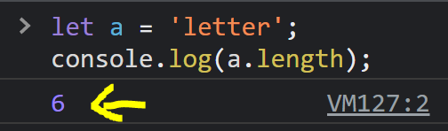

JS Motly used String Methods
- .length is property to check a length of String.
- .toUpperCase() is a built in JS String function to make the strings in upper Case.
- .toLowerCase() is also a built in JS function to lower case the strings.
- In strings the Index will start from 0 check below example

The length of letter is 6 -
letter [l, e, t, t, e, r]
it starts from 0 and it end at 5 [ 0,1,2,3,4,5]
- .slice() method is buitl in JS fucntion which takes arguments to Break the strings from one index position to another.
-
slicing the strings by using parameters in string methods from index position to position
.slice(3,5) so here "Apple" output will be >> ple
.slice(3) so the output will be >> le
- .replace() also holds two parameters('AB',CD) so AB will replace by CD in this scenario.
-
.reverse()